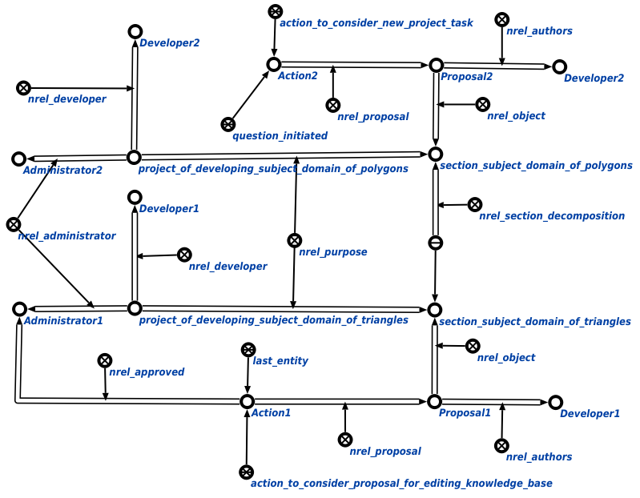

Команда поиска инициированных действий, доступных администратору для отклонения или утверждения предназначена для поиска всех инициированных действий, которые данный администратор* может утвердить* или отклонить*. Единственным аргументом запроса является администратор*, для которого осуществляется поиск всех инициированных действий, которые данный администратор* может утвердить* или отклонить*. Например:
